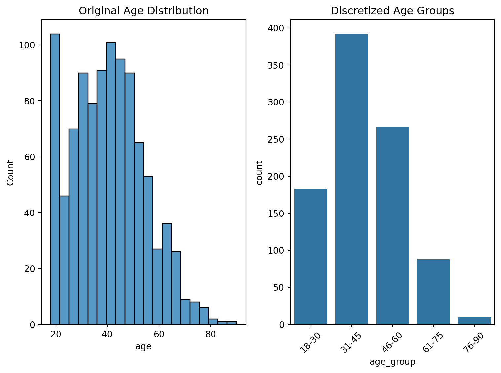
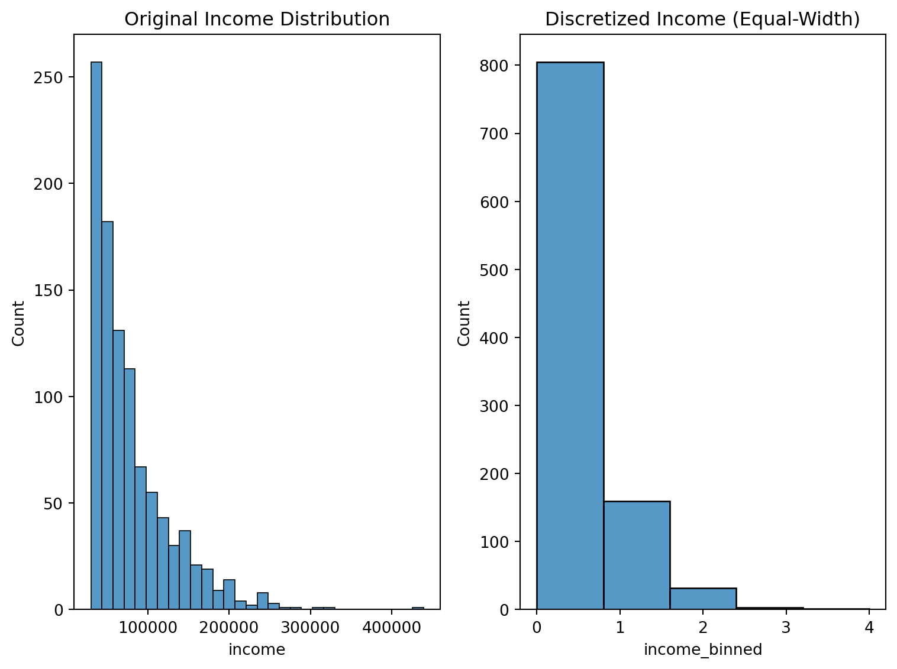
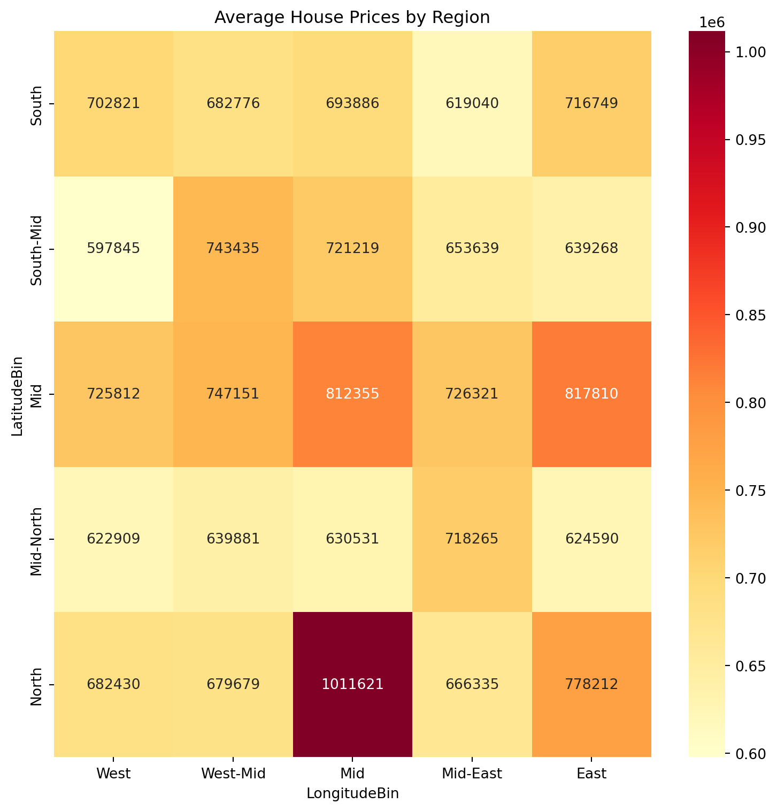
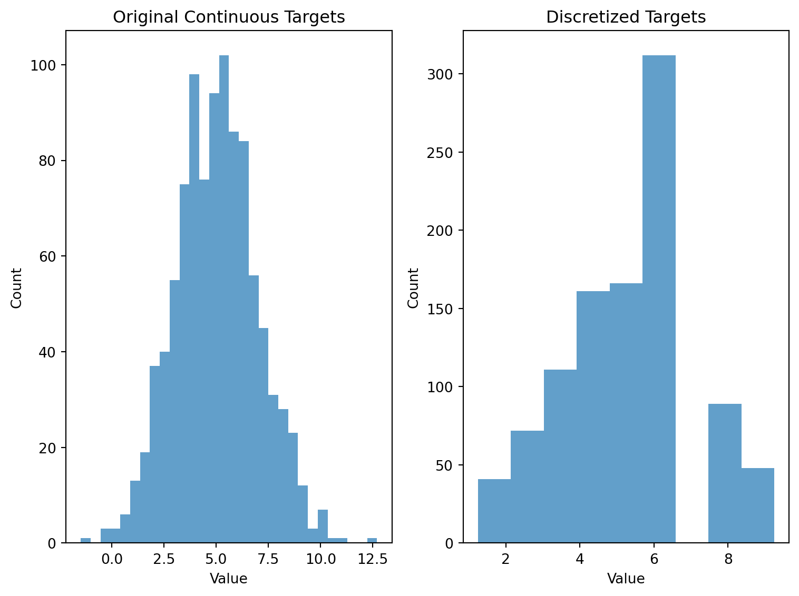

# Import required libraries
import pandas as pd
import numpy as np
import matplotlib.pyplot as plt
import seaborn as sns
from sklearn.preprocessing import KBinsDiscretizer
# Set styling for plots
# plt.style.use('seaborn')Introduction
Data discretization is a powerful technique that can significantly improve your machine learning models’ performance. In this tutorial, we’ll explore practical implementations with real-world examples and visualizations.
Basic Age Discretization Example
Let’s start with a simple example using age data:
# Create sample data
np.random.seed(42)
data = {'age': np.random.normal(40, 15, 1000).clip(18, 90)}
df = pd.DataFrame(data)
# Create age bins
age_bins = [18, 30, 45, 60, 75, 90]
age_labels = ['18-30', '31-45', '46-60', '61-75', '76-90']
df['age_group'] = pd.cut(df['age'], bins=age_bins, labels=age_labels)
# Visualize the distribution
plt.figure(figsize=(8, 6))
plt.subplot(1, 2, 1)
sns.histplot(data=df, x='age', bins=20)
plt.title('Original Age Distribution')
plt.subplot(1, 2, 2)
sns.countplot(data=df, x='age_group')
plt.title('Discretized Age Groups')
plt.xticks(rotation=45)
plt.tight_layout()
plt.show()
Advanced Discretization Techniques
1. Equal-Width Binning Using KBinsDiscretizer
# Generate sample data
np.random.seed(42)
data = {
'income': np.random.exponential(50000, 1000) + 30000
}
df_income = pd.DataFrame(data)
# Apply KBinsDiscretizer
est = KBinsDiscretizer(n_bins=5, encode='ordinal', strategy='uniform')
df_income['income_binned'] = est.fit_transform(df_income[['income']])
# Visualize
plt.figure(figsize=(8, 6))
plt.subplot(1, 2, 1)
sns.histplot(data=df_income, x='income', bins=30)
plt.title('Original Income Distribution')
plt.subplot(1, 2, 2)
sns.histplot(data=df_income, x='income_binned', bins=5)
plt.title('Discretized Income (Equal-Width)')
plt.tight_layout()
plt.show()/Users/fabianlanderos/miniforge3/envs/quarto/lib/python3.12/site-packages/sklearn/preprocessing/_discretization.py:248: FutureWarning:
In version 1.5 onwards, subsample=200_000 will be used by default. Set subsample explicitly to silence this warning in the mean time. Set subsample=None to disable subsampling explicitly.

2. Quantile-Based Discretization
# Apply quantile-based discretization
df_income['income_quantile'] = pd.qcut(df_income['income'], q=5, labels=['Q1', 'Q2', 'Q3', 'Q4', 'Q5'])
# Calculate mean income per quantile
quantile_means = df_income.groupby('income_quantile')['income'].mean()
# Visualize
plt.figure(figsize=(10, 6))
quantile_means.plot(kind='bar')
plt.title('Mean Income by Quantile')
plt.xlabel('Income Quantile')
plt.ylabel('Mean Income ($)')
plt.xticks(rotation=45)
plt.tight_layout()
plt.show()/var/folders/nq/y2lyg7p15txfm5ksrw6f90340000gn/T/ipykernel_59379/873430559.py:5: FutureWarning:
The default of observed=False is deprecated and will be changed to True in a future version of pandas. Pass observed=False to retain current behavior or observed=True to adopt the future default and silence this warning.

Real-World Application: Housing Data
Let’s demonstrate the power of discretization with a housing dataset example:
# Create synthetic housing data
np.random.seed(42)
n_samples = 1000
housing_data = pd.DataFrame({
'Latitude': np.random.uniform(32.0, 42.0, n_samples),
'Longitude': np.random.uniform(-124.0, -114.0, n_samples),
'Price': np.random.exponential(500000, n_samples) + 200000
})
# Discretize locations
housing_data['LatitudeBin'] = pd.cut(housing_data['Latitude'], bins=5, labels=['South', 'South-Mid', 'Mid', 'Mid-North', 'North'])
housing_data['LongitudeBin'] = pd.cut(housing_data['Longitude'], bins=5, labels=['West', 'West-Mid', 'Mid', 'Mid-East', 'East'])
# Calculate average prices by region
region_prices = housing_data.groupby(['LatitudeBin', 'LongitudeBin'])['Price'].mean().unstack()
# Create heatmap
plt.figure(figsize=(8, 8))
sns.heatmap(region_prices, annot=True, fmt='.0f', cmap='YlOrRd')
plt.title('Average House Prices by Region')
plt.tight_layout()
plt.show()/var/folders/nq/y2lyg7p15txfm5ksrw6f90340000gn/T/ipykernel_59379/674675667.py:16: FutureWarning:
The default of observed=False is deprecated and will be changed to True in a future version of pandas. Pass observed=False to retain current behavior or observed=True to adopt the future default and silence this warning.

Target Discretization Example
Here’s an implementation of the winning strategy mentioned for converting continuous targets to discrete values:
# Generate synthetic continuous target data
np.random.seed(42)
continuous_targets = np.random.normal(5, 2, 1000)
# Define unique target values
unique_targets = np.array([1.25, 2.25, 3.05, 4.05, 4.85, 5.75, 6.55, 7.75, 9.25])
# Transform to nearest discrete target
discretized_targets = np.array([unique_targets[np.abs(unique_targets - y).argmin()]
for y in continuous_targets])
# Visualize the transformation
plt.figure(figsize=(8, 6))
plt.subplot(1, 2, 1)
plt.hist(continuous_targets, bins=30, alpha=0.7)
plt.title('Original Continuous Targets')
plt.xlabel('Value')
plt.ylabel('Count')
plt.subplot(1, 2, 2)
plt.hist(discretized_targets, bins=len(unique_targets), alpha=0.7)
plt.title('Discretized Targets')
plt.xlabel('Value')
plt.ylabel('Count')
plt.tight_layout()
plt.show()
Conclusion
Data discretization is a powerful technique that can significantly improve model performance. Key takeaways:
- It reduces noise in continuous variables
- Improves model interpretability
- Can lead to better performance in certain algorithms
- Particularly effective in geographic and demographic data
Remember to experiment with different binning strategies and number of bins to find the optimal discretization for your specific problem.